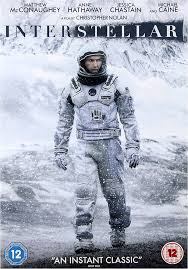

Interstellar is a science fiction film directed by Christopher Nolan that explores space travel, time dilation, and humanity’s survival. A team of astronauts travels through a wormhole near Saturn to find a new home for humanity as Earth becomes uninhabitable.
One of the most powerful parts of the movie is how it blends real scientific theories with emotional storytelling. Because of time dilation, one hour on a distant planet can equal many years on Earth — causing emotional separation between Cooper and his daughter.
Fun Facts:
• The black hole "Gargantua" was created using real physics equations
• Scientists helped design the visuals for accuracy
• The cornfield scenes used real crops, not CGI
• The soundtrack by Hans Zimmer was recorded before filming was finished